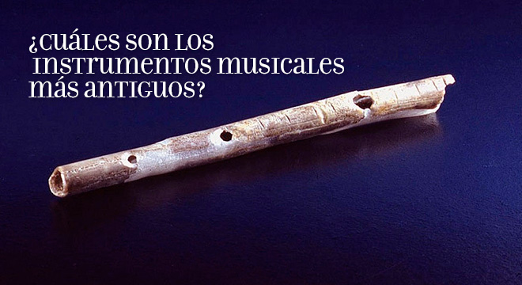

El origen de la música se encuentra cubierto de misterio , aunque se estima comenzó en la prehistoria de la humanidad y se lo vincula con los ritos de apareamiento y con el trabajo colectivo.la danza y el canto parecen haber estado desde el principio asociados al modo en que el ser humano comprende el mundo. De hecho, formaban parte de sus manifestaciones religiosas o chamánicas, como rituales de sanación, cantos de batalla o de cacería, o bailes para atraer la lluvia. |
 |
Historia de la música
Historia
Instrumentos antiguos
Los instrumentos más antiguos son flautas de hueso de más de 30.000 años de antigüedad. Mucho más tarde, en Sumeria del 3.000 a. C. existían instrumentos primitivos de percusión y de cuerdas. Por su parte, en el Imperio Nuevo del Antiguo Egipto empleaban escalas de siete sonidos distintos, y diversos instrumentos como el arpa, el oboe y los tambores. Sin embargo, los primeros tratados sobre la música de Occidente son de origen griego, ya que los antiguos helenos le daban mucha importancia al valor educativo y moral de la música, vinculada siempre con el poema trágico y la mitología. Su equivalente oriental se encuentra en la Antigua China, cuya música respondía ya en el siglo IV a. C. a una escala cíclica propia. Fuente: https://concepto.de/musica/#ixzz7NeTFxt9h |
 |